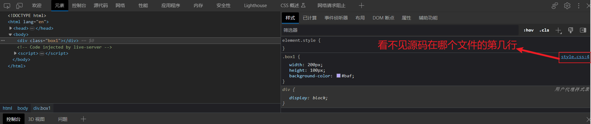
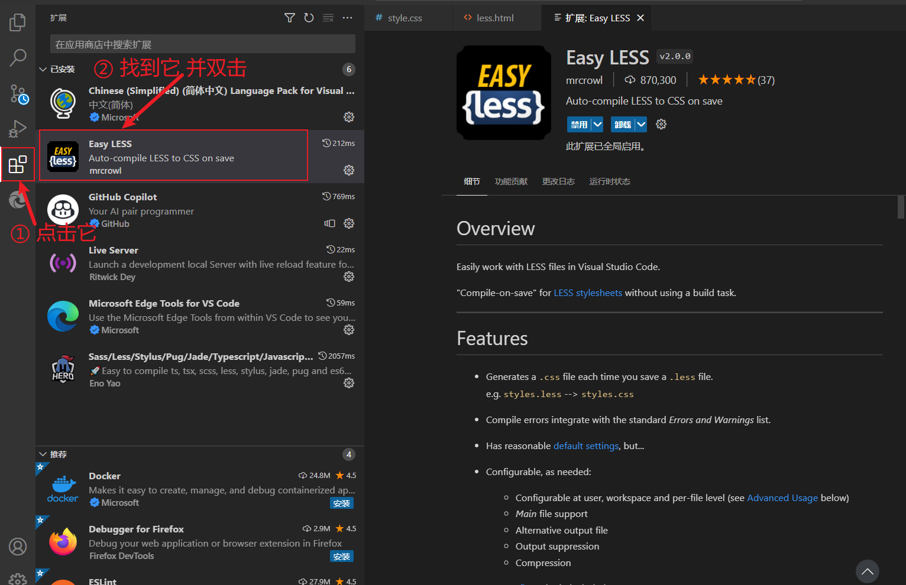
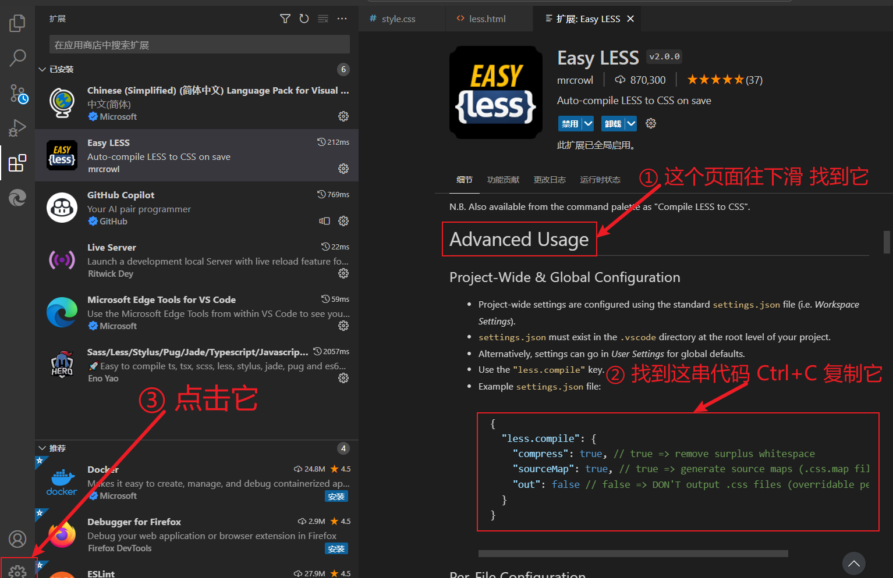
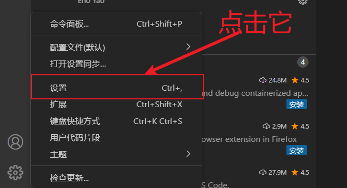
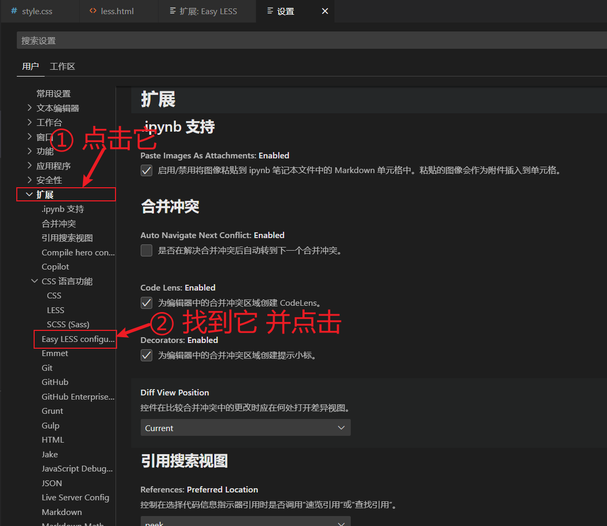
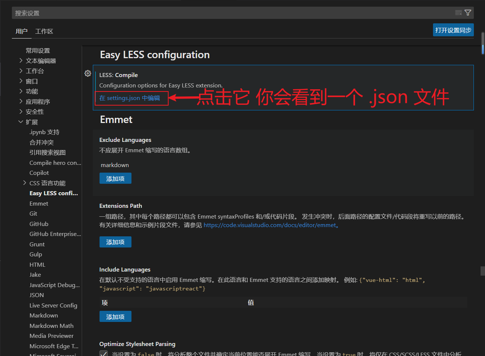
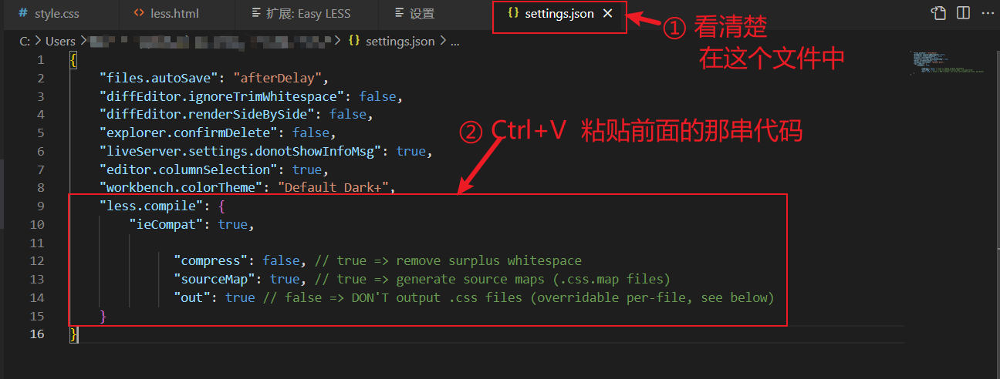
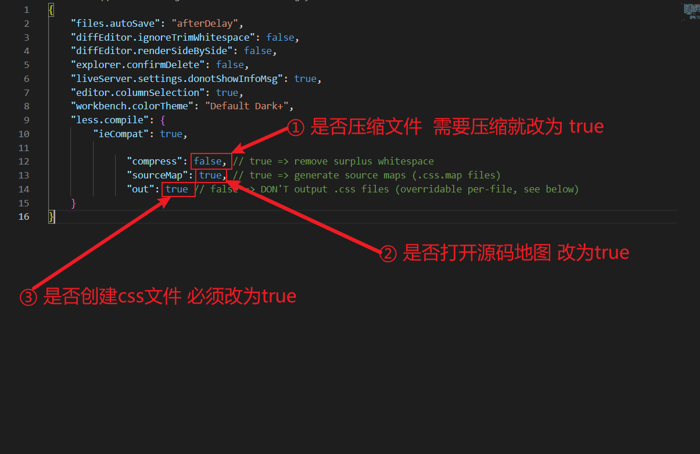
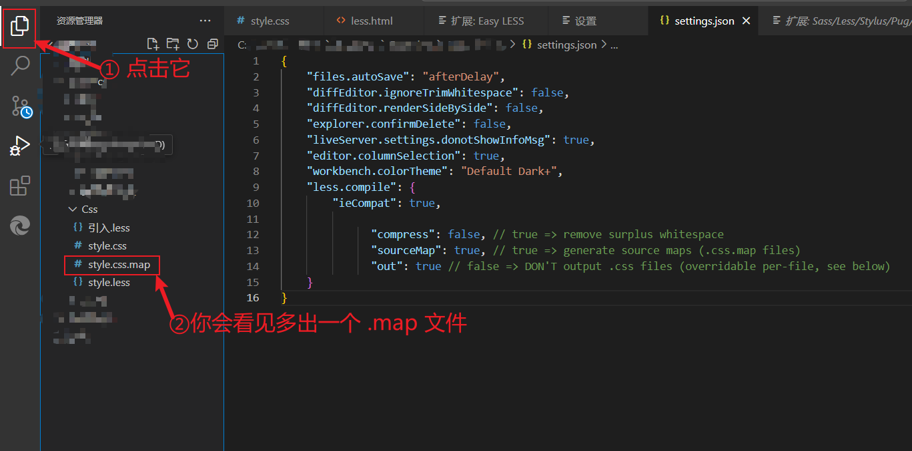
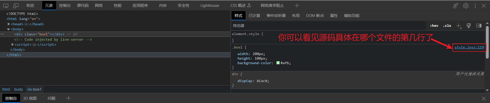

VS Code 配置 插件Easy LESS 显示源代码地图
简介：
在 .less 文件中编辑html样式 在浏览器中查看时 只能看见该行代码生成的 .css 文件中的具体位置 看不见在 .less 文件中的具体位置 下面就是通过在 VS Code 中配置 Easy LESS 显示源代码地图来解决这个问题
1.步骤一
运行html文件 检查后看不到代码是在 less 文件中的第几行

2.步骤二
在 VScode 安装的所有插件中找到 Easy LESS 并双击

3.步骤三
在右侧 Easy LESS 中下滑找到 Advanced Usage 就可以找到图中的代码 复制
1 | { |

4.步骤四
接着点击图中所示 设置

5.步骤五
点击图中所示 扩展 再点击 Easy LESS

6.步骤六
如图 点击在settings.json 中编辑 你会看到一个 .json 文件

7.步骤七
此时 将前面复制的那三行代码 Ctrl+V 粘贴进 .json 文件中

8.步骤八
修改它们的值 一定一定一定 不要忘记保存
①为是否需要压缩文件 如果需要就修改为 true 不需要则不改
②为是否打开源码地图 这个必须设置为 true
③为是否创建 css 文件 必须改为 true 否则配置这个插件就没有意义了

9.完成
完成以上步骤 说明你已经配置完了 如图 当你重新保存 .less 文件后 会出现一个后缀名 .map 的 映 射文件 说明你已经配置成功了 恭喜你

10.查看
在浏览器中运行后 就可以看见该行代码在 .less 文件的第几行了 方便直接修改

本博客所有文章除特别声明外，均采用 CC BY-NC-SA 4.0 许可协议。转载请注明来自 桃子的杂事站！